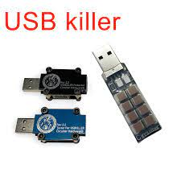

←
Tra i reati informatici presenti nella legge, c'è la diffusione di hardware e software diretti al danneggiamento dei sistemi.
Chiunque usa questi dispositivi per intercettare, impedire o interrompere comunicazioni relative a un sistema informatico la pena è una reclusione da uno a 5
anni di carcere.
Sono elementi hardware e software che attaccano e danneggiano direttamente un sitema informatica, attaccando la parte sotware del pc.
I cyberbulli mettono in vendita questi dispositivi.
Questo fenomeno segue l'articolo 615:

"chiunque, allo scopo di danneggiare illecitamente un sistema informatico o telematico, le informazioni,
i dati o i programmi in esso contenuti o ad esso pertinenti ovvero di favorire l`interruzione,
totale o parziale, o l`alterazione del suo funzionamento, si procura, produce, riproduce, importa, diffonde, comunica, consegna o,
comunque, mette a disposizione di altri apparecchiature,
dispositivi o programmi informatici, è punito con la reclusione fino a due anni e con la multa sino a 10.329€".
USB Killer
La USB è un noto esempio di un dispositivo Hardware che riesce a sovraccaricare il dispositivo danneggiandone i componenti all`interno.